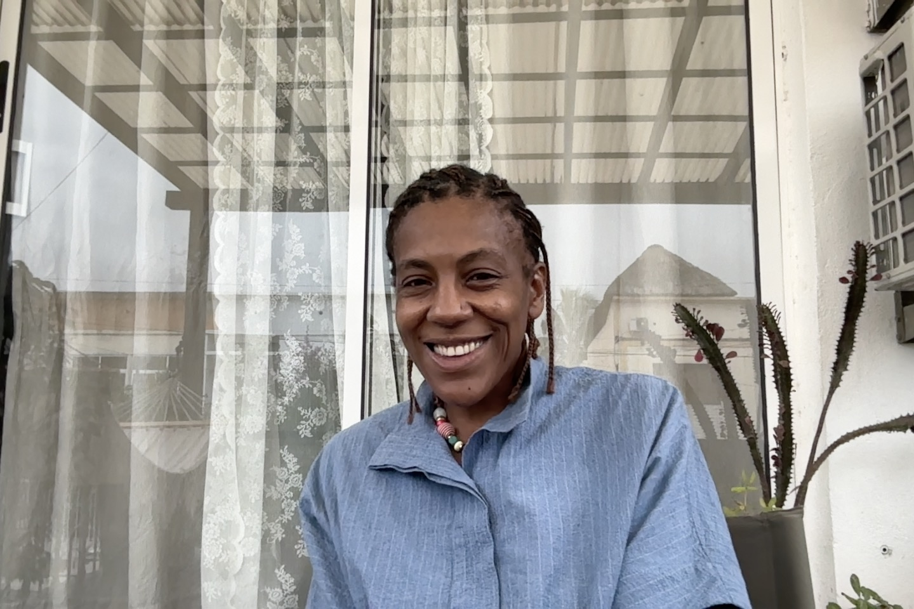

Hi, I'm Ndilokelwa Luis — but you can call me Andi. I'm an Aerospace Systems Engineer with a PhD in Aerospace Engineering, INCOSE ASEP certification, and a multidisciplinary career spanning scientific research, software engineering, systems architecture and technical leadership.
I began my career in aerospace research, working on mathematical modelling, simulation, optimisation, structural dynamics, sensing, actuation and vibration control. That experience taught me how to understand complex physical systems, translate engineering problems into models, and validate solutions through analysis.
I later moved into software engineering, where I progressed from Software Developer to Team Leader and Solutions Architect. Working on international multidisciplinary projects gave me a different perspective on complexity: not only how systems behave physically, but how requirements, software, data, interfaces, users and technical decisions must come together throughout a system lifecycle.
Systems Engineering became the natural convergence of these experiences.
Today, I focus on MBSE, requirements engineering, system architecture, modelling and simulation, and the engineering of complex aerospace and technology systems. I am an INCOSE Associate Systems Engineering Professional (ASEP), with the Acquisition extension, and TOGAF 9 Certified, and I work with technologies and methods including SysML, IBM DOORS Next, MATLAB, Python and modern software engineering tools.
My portfolio reflects this direction: combining rigorous engineering analysis with requirements, architecture, modelling, verification and lifecycle thinking to understand not only whether a component works, but whether the whole system works for its intended purpose.
That is the kind of engineering I want to do: connecting disciplines, making complexity understandable, and helping shape systems from concept to operation.
Olá, o meu nome é Ndilokelwa Luis — mas podem tratar-me por Andi. Sou Engenheira de Sistemas Aeroespaciais, com doutoramento em Engenharia Aeroespacial, certificação INCOSE ASEP e uma carreira multidisciplinar que abrange investigação científica, engenharia de software, arquitetura de sistemas e liderança técnica.
Iniciei a minha carreira na investigação aeroespacial, trabalhando em modelação matemática, simulação, otimização, dinâmica estrutural, sensoriamento, atuação e controlo de vibrações. Essa experiência ensinou-me a compreender sistemas físicos complexos, a traduzir problemas de engenharia em modelos e a validar soluções através da análise.
Mais tarde, transitei para a engenharia de software, onde progredi de Software Developer para Team Leader e Solutions Architect. Trabalhar em projetos internacionais e multidisciplinares deu-me uma perspetiva diferente sobre a complexidade: não apenas sobre como os sistemas se comportam fisicamente, mas sobre como requisitos, software, dados, interfaces, utilizadores e decisões técnicas têm de se integrar ao longo do ciclo de vida de um sistema.
A Engenharia de Sistemas tornou-se a convergência natural destas experiências.
Hoje, o meu foco está em MBSE, engenharia de requisitos, arquitetura de sistemas, modelação e simulação, e na engenharia de sistemas aeroespaciais e tecnológicos complexos. Sou INCOSE Associate Systems Engineering Professional (ASEP), com a extensão Acquisition, e TOGAF 9 Certified, e trabalho com tecnologias e métodos como SysML, IBM DOORS Next, MATLAB, Python e ferramentas modernas de engenharia de software.
O meu portefólio reflete esta direção: combino análise de engenharia rigorosa com requisitos, arquitetura, modelação, verificação e pensamento orientado ao ciclo de vida para compreender não apenas se um componente funciona, mas se o sistema como um todo cumpre o seu propósito.
É este o tipo de engenharia que quero fazer: ligar disciplinas, tornar a complexidade compreensível e ajudar a conceber sistemas desde o conceito até à operação.
